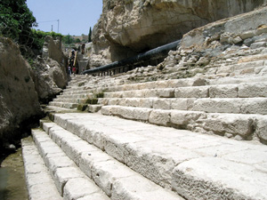

В Иерусалиме, в той его части, которая называется Старый город, археологи обнаружили место, где Иисус исцелил человека, слепого от рождения (Иоанна 9:7). Вода в купальню Силоам поступала из знаменитого водопровода, построенного царем Езекией (4 Царств 20:20; 2 Пар 32:30). Купальня имеет «более сложное строение», чем предполагали археологи. Она включает три яруса каменных ступеней, ведущих к воде.
В земле в одном из углов купальни археологи обнаружили монеты, датированные примерно 66–70 годами нашей эры. Данная находка указывает на то, что купальня начала в это время засоряться. Она расположена в одной из самых низких точек Иерусалима. И поэтому воды зимних дождей, стекающие в долину, откладывали в ней слой ила. Если купальню больше не чистили, то она очень быстро засорилась илом и скрылась в осадочных отложениях.
«Ученые утверждали, что такого места как купальня Силоам вообще не существовало, и что Иоанн просто использовал религиозный образ» (чтобы донести мысль), – говорит Джеймс Х. Чарлзворт из Принстонской теологической семинарии.
«Теперь мы обнаружили купальню Силоам … именно там, где она и должна находиться, по словам Иоанна. Это показывает, что Евангелие, которое считалось «чистой теологией», основано на истории», – добавил он.
Книга Бытие также исторична. Бытие - это реальная история, а не метафора, поэзия или «религиозный образ». Из Бытия мы узнаем о происхождении греха и смерти, которые являются логической основой для Евангельского послания — мы понимаем, почему было необходимо, чтобы Иисус, автор жизни, должен был умереть вместо нас. К сожалению, многие люди не верят в ясное Библейское послание о спасении, так как думают, что они не могут доверять простому Библейскому учению об истории мира.
